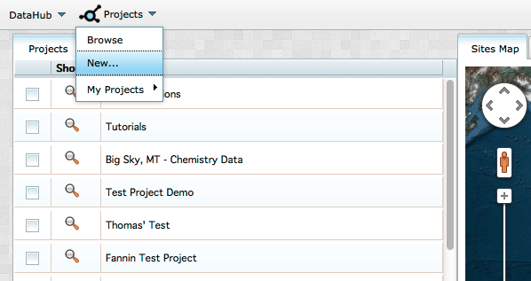
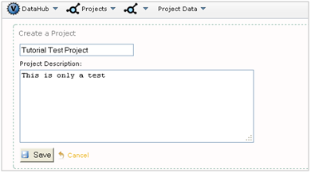
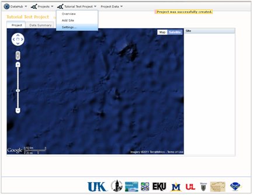
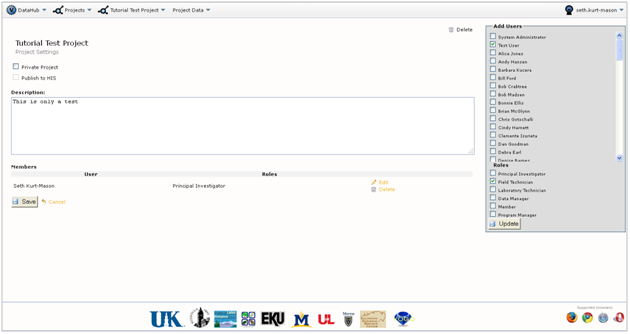

In order to create a project in VOEIS, your account will need to be granted special permissions by the system administrator. If you believe that you should be able to create new projects, but are unable to do so, please contact the system administrator for assistance.
Creating a new project creates a new instance of a VOEIS database. Once created, you will have full control over management of permissions and public access settings for this database. To create a new project, select "New..." from the "Projects" dropdown list on the Project_Browse page.

You will be directed to a Project_Creation page. Give your project a name and describe the sort of data that it will house. When you are finished, click "Save".

You will be directed to your new project's Project_Show page. There will not be any sites contained in your project, so your project map and site list will be empty. Select "Settings" from the (Project_Name) dropdown menu. You will be directed to the Project_Management page for your project.

The Project_Management page allows you to add users and define their respective roles in the project. You can also decide whether to make your project private (viewable by only you and the other project users), public, or publishable to HIS.

Congratulations! You've just created a project. Now you need to add some users and create some data collection sites.
Created with the Personal Edition of HelpNDoc: Easy to use tool to create HTML Help files and Help web sites